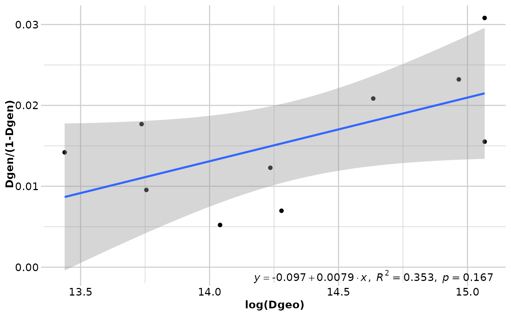
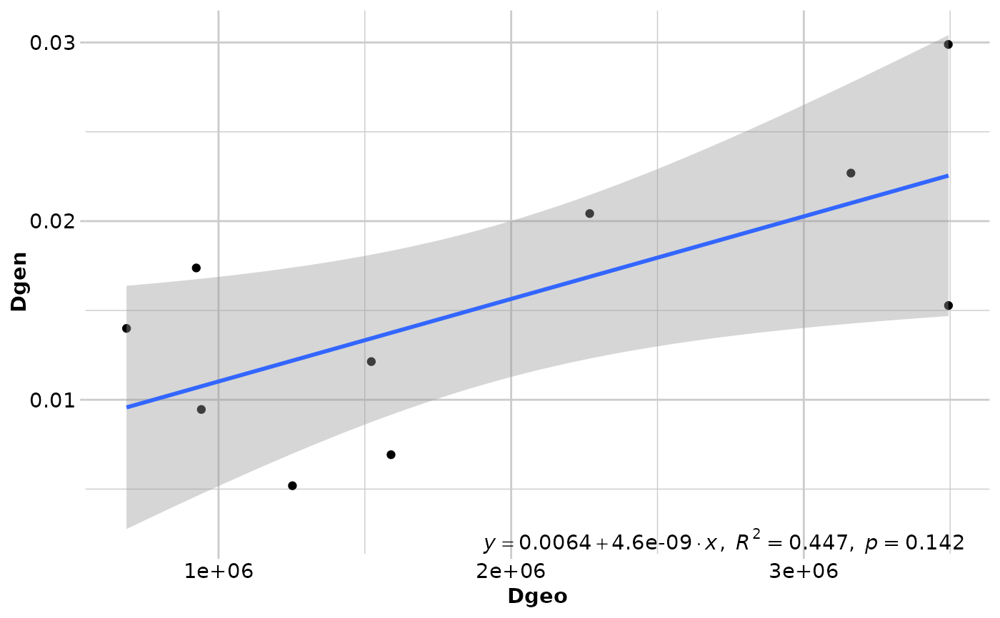

Performs isolation by distance analysis
gl.ibd.RdThis function performs an isolation by distance analysis based on a Mantel test and also produces an isolation by distance plot. If a genlight object with coordinates is provided, then an Euclidean and genetic distance matrices are calculated. #'
Usage
gl.ibd(
x = NULL,
distance = "Fst",
coordinates = "latlon",
Dgen = NULL,
Dgeo = NULL,
Dgeo_trans = "Dgeo",
Dgen_trans = "Dgen",
permutations = 999,
plot.out = TRUE,
paircols = NULL,
plot_theme = theme_dartR(),
save2tmp = FALSE,
verbose = NULL
)Arguments
- x
Genlight object. If provided a standard analysis on Fst/1-Fst and log(distance) is performed [required].
- distance
Type of distance that is calculated and used for the analysis. Can be either population based 'Fst' [stamppFst], 'D' [stamppNeisD] or individual based 'propShared', [gl.propShared], 'euclidean' [gl.dist.ind, method='Euclidean'] [default "Fst"].
- coordinates
Can be either 'latlon', 'xy' or a two column data.frame with column names 'lat','lon', 'x', 'y'). Coordinates are provided via
gl@other$latlon['latlon'] or viagl@other$xy['xy']. If latlon data will be projected to meters using Mercator system [google maps] or if xy then distance is directly calculated on the coordinates.- Dgen
Genetic distance matrix if no genlight object is provided [default NULL].
- Dgeo
Euclidean distance matrix if no genlight object is provided [default NULL].
- Dgeo_trans
Transformation to be used on the Euclidean distances. See Dgen_trans [default "Dgeo"].
- Dgen_trans
You can provide a formula to transform the genetic distance. The transformation can be applied as a formula using Dgen as the variable to be transformed. For example:
Dgen_trans = 'Dgen/(1-Dgen)'. Any valid R expression can be used here [default 'Dgen', which is the identity function.]- permutations
Number of permutations in the Mantel test [default 999].
- plot.out
Should an isolation by distance plot be returned [default TRUE].
- paircols
Should pairwise dots colored by 'pop'ulation/'ind'ividual pairs [default 'pop']. You can color pairwise individuals by pairwise population colors.
- plot_theme
Theme for the plot. See details for options [default theme_dartR()].
- save2tmp
If TRUE, saves any ggplots and listings to the session temporary directory (tempdir) [default FALSE].
- verbose
Verbosity: 0, silent or fatal errors; 1, begin and end; 2, progress log ; 3, progress and results summary; 5, full report [default 2 or as specified using gl.set.verbosity].
Value
Returns a list of the following components: Dgen (the genetic distance matrix), Dgeo (the Euclidean distance matrix), Mantel (the statistics of the Mantel test).
Details
Currently pairwise Fst and D between populations and 1-propShared and Euclidean distance between individuals are implemented. Coordinates are expected as lat long and converted to Google Earth Mercator projection. If coordinates are already projected, provide them at the x@other$xy slot.
You can provide also your own genetic and Euclidean distance matrices. The function is based on the code provided by the adegenet tutorial (http://adegenet.r-forge.r-project.org/files/tutorial-basics.pdf), using the functions mantel (package vegan), stamppFst, stamppNeisD (package StAMPP) and gl.propShared or gl.dist.ind. For transformation you need to have the dismo package installed. As a new feature you can plot pairwise relationship using double colored points (paircols=TRUE). Pairwise relationship can be visualised via populations or individuals, depending which distance is calculated. Please note: Often a problem arises, if an individual based distance is calculated (e.g. propShared) and some individuals have identical coordinates as this results in distances of zero between those pairs of individuals. If the standard transformation [log(Dgeo)] is used, this results in an infinite value, because of trying to calculate'log(0)'. To avoid this, the easiest fix is to change the transformation from log(Dgeo) to log(Dgeo+1) or you could add some "noise" to the coordinates of the individuals (e.g. +- 1m, but be aware if you use lat lon then you rather want to add +0.00001 degrees or so).
References
Rousset, F. (1997). Genetic differentiation and estimation of gene flow from F-statistics under isolation by distance. Genetics, 145(4), 1219-1228.
Author
Bernd Gruber (bugs? Post to https://groups.google.com/d/forum/dartr)
Examples
# \donttest{
#because of speed only the first 100 loci
ibd <- gl.ibd(bandicoot.gl[,1:100], Dgeo_trans='log(Dgeo)' ,Dgen_trans='Dgen/(1-Dgen)')
#> Analysis performed on the genlight object.
#> Coordinates transformed to Mercator (google) projection to calculate distances in meters.
#>
#> 'nperm' >= set of all permutations: complete enumeration.
#> Set of permutations < 'minperm'. Generating entire set.

#> Coordinates used from: x@other$latlon (Mercator transformed)
#> Transformation of Dgeo: log(Dgeo)
#> Genetic distance: Fst
#> Tranformation of Dgen: Dgen/(1-Dgen)
#>
#> Mantel statistic based on Pearson's product-moment correlation
#>
#> Call:
#> vegan::mantel(xdis = Dgen, ydis = Dgeo, permutations = permutations, na.rm = TRUE)
#>
#> Mantel statistic r: 0.5945
#> Significance: 0.16667
#>
#> Upper quantiles of permutations (null model):
#> 90% 95% 97.5% 99%
#> 0.683 0.737 0.779 0.815
#> Permutation: free
#> Number of permutations: 119
#>
#>
#> Completed: gl.ibd
#>
#>
#because of speed only the first 10 individuals)
ibd <- gl.ibd(bandicoot.gl[1:10,], distance='euclidean', paircols='pop', Dgeo_trans='Dgeo')
#> Analysis performed on the genlight object.
#> Coordinates transformed to Mercator (google) projection to calculate distances in meters.
#>
#> Coordinates used from: x@other$latlon (Mercator transformed)
#> Transformation of Dgeo: Dgeo
#> Genetic distance: euclidean
#> Tranformation of Dgen: Dgen
#>
#> Mantel statistic based on Pearson's product-moment correlation
#>
#> Call:
#> vegan::mantel(xdis = Dgen, ydis = Dgeo, permutations = permutations, na.rm = TRUE)
#>
#> Mantel statistic r: 0.3406
#> Significance: 0.025
#>
#> Upper quantiles of permutations (null model):
#> 90% 95% 97.5% 99%
#> 0.224 0.287 0.339 0.376
#> Permutation: free
#> Number of permutations: 999
#>
#>
#> Completed: gl.ibd
#>
#>
# }
#only first 100 loci
ibd <- gl.ibd(bandicoot.gl[,1:100])
#> Analysis performed on the genlight object.
#> Coordinates transformed to Mercator (google) projection to calculate distances in meters.
#>
#> 'nperm' >= set of all permutations: complete enumeration.
#> Set of permutations < 'minperm'. Generating entire set.

#> Coordinates used from: x@other$latlon (Mercator transformed)
#> Transformation of Dgeo: Dgeo
#> Genetic distance: Fst
#> Tranformation of Dgen: Dgen
#>
#> Mantel statistic based on Pearson's product-moment correlation
#>
#> Call:
#> vegan::mantel(xdis = Dgen, ydis = Dgeo, permutations = permutations, na.rm = TRUE)
#>
#> Mantel statistic r: 0.6683
#> Significance: 0.14167
#>
#> Upper quantiles of permutations (null model):
#> 90% 95% 97.5% 99%
#> 0.711 0.765 0.804 0.828
#> Permutation: free
#> Number of permutations: 119
#>
#>
#> Completed: gl.ibd
#>
#>